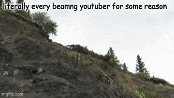

Quick directions:
Important: there are a ton of confounds such as: NPC dialogue, streamer chat, non gaming videos, sponsorship/merch segments.
This map excludes videos under 8 minutes and excludes livestreams. Livestream clips slip in many times.
I recommend never focusing on channels with high confounds, like indie horror and AAA game focused channels.
a lot of channels with big fanbases are heavily confounded
But check out channels like VanossGaming and Smii7y, they don't have too much confounds. They do have some sponsorship segments so note that.
- You can drag the panels in CentroidsMap. the grey bar on top of each panel allows you to move it around.
- You can resize panels by holding the /// on the bottom right corner of the panels.
- If a panel is moved in a way it cannot be dragged back, you can press the "Reset Panels" button on the bottom right of the map.
- The tools to navigate the map are on the top right. Left of the Color Scale panel.
- Please do not confuse Color Scale zoom in/out with the map navigation tools.
- Semantic mode is heavily on metrics, which from what I recall are computed on the last 1 million words of a channel.
- If a channel does not have 1 million words it is excluded and not colored by the metric.
- You can select metrics on the Color Metric panel. You can hide labels which are the names on top of the plot points, and hide gray points, which are channels with no metrics
- Some metrics have all channels computed, (Centroid) metrics and Distance from Center.
- Color scale will allow you to adjust the color mapping of the metrics. In cases where there is a massive outlier.
- Correlation view will allow you to see the relationships between different metrics.
- Fightin Words were not computed.
- Focus Text will allow you to focus on one channel. It turns the channel into a star.
- The Similarity: checkbox affects "Show semantic connections"
- This checkbox causes the focus to have tendrils, the red tendrils are closer and bluer ones are farther.
- With the slider you can adjust how many connections are seen on the map, keep it low bc of lag.
- The "Hide texts outside focused text cluster" checkbox allows you to hide channel points that are outside the focused text cluster.
- You can choose which clustering mode to use, regular Leiden clusterings are made for the semantic map.
- If you want to explore similar speaking styles of different niches, go with Burrows clusterings.
- Experimental mode is accessed from the bottom left corner.
- Your focus channels settings will change to burrows
- You can access Function Word Frequency map on the top left, Delta Explorer on the bottom left.
- Function Word Frequency makes you see a PDF curve
- the middle "peak" of the PDF is the corpus mean, the average usage for that word in the corpus.
- You can change it to a CDF curve in View: in the function word frequency main panel.
- You can select function words to display in the map.
- You can display many but it is currently annoying to do so.
- I recommend using the search bar to filter the words you want and them select to select multiple, instead of scrolling in the display of words.
- Word stats show stats based on the selection. if you have set a focus channel, more stats will show.
- There is a "Show Cluster Stats" button.
- Clicking any of the "Top contributing words" will reset your current function word selection, for the one you picked.
- Red function words are those that are most characteristic of the selected focus cluster. Blue is not.
- The grey percentage shows how much the word contributes to the burrows delta scoring.
- You can sort the function words with sort: options. Choose what looks best.
- You can filter the function words with the sign: option. Choose to only show positives or negatives
- "Check a Word:" updates "Cluster stats for:" to let you see stats in detail without rounding.
- Changing "Compare:" to "Another Cluster" will unlock the evil focus and it's cluster, which helps compare clusters.
- Select an evil focus channel and it will autoselect the cluster that evil focus is in.
- From the button on the bottom left corner, you can access the Explore Delta mode which allows you to compare 2 channels instead of clusters.
- The midline is the corpus mean, the average usage for that word in the corpus.
- Sort modes help you organize the function words in different ways.
- You can find what words separate a channel from the other, what words bring them together, and what word do they both use in usual freeuencies from the mean.
- Delta Explorer Stats panel helps verbalize the differences.
More:
If you like Burrows Delta, you should look into Bayesian log odds and the Fightin' Words algorithm.
Bayesian Log odds in the Fightin' Words algorithm can help find phrases that make a channel unique.
It is a cool method especially when it is run on unique channels like Ctop.
Random GIF:
